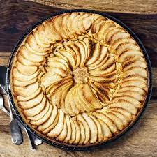

Tarte aux pommes

Description
Recette facile de tarte normande aux pommes ! Une tarte traditionnelle avec des pommes, de la crème et beaucoup de gourmandise !
Ingrédients
- 1 tablette de chocolat
- 1 pâte sablée
- 2 pommes
- 2 oeufs
- 200ml de crème liquide
Étapes
- Pelez et coupez les pommes en fins quartiers.
- Faites chauffer la crème et versez sur le chocolat cassé en morceaux. Mélangez. Ajoutez les oeufs.
- Déroulez la pâte dans un moule à tarte (24cm de diamètre). Ajoutez la préparation au chocolat et répartissez les pommes dessus.
- Faites cuire en bas de four 25 minutes en mode traditionnel à 200°C.